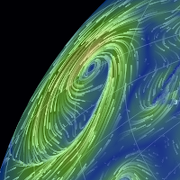
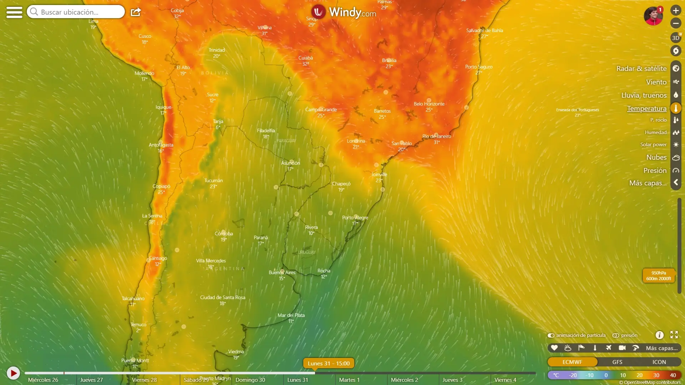

Siklóernyős Klubok
Siklóernyőzésről
Siklóernyőzés
˅
Siklóernyőzésről
Siklóernyős Felszerelések
Siklóernyős Tanfolyamok
Siklóernyős Oktatók
Tananyagok
K.S.P.
Starthelyek
Tandemrepülés
˅
Tandemrepülésről Általában
Tandempilóták
Jelentkezés Tandemrepülésre
Ajándékutalvány
Hasznos
˅
Légterek
Túrák
Gyártók
Szervezetek
Reporvos
Xcontest
Meteo
Hírek
Meterológia
Siklóernyős fókuszú meterológiai adatok és oldalak gyűjteménye
Provider:
OpenWeather
Provider:
OpenWeather
Provider:
OpenWeather
Provider:
OpenWeather
Országos Meterológiai Szolgálat szél
Időkép széljelentés
koponyeg.hu térképek
metnet.hu
agroinform.hu
meteoblue.com
windguru.cz
windy.com
 earth.nullschool.net
wentusky.com
 Termik szél stb.